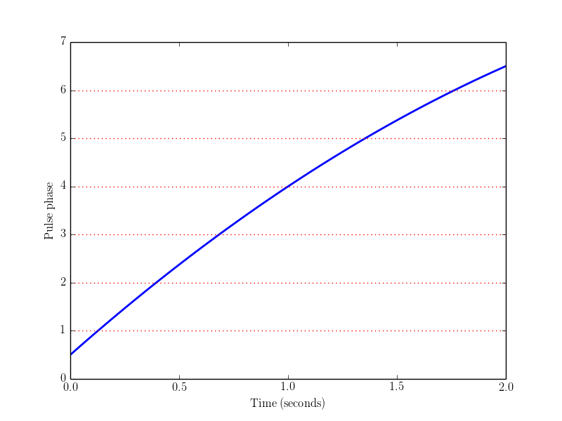
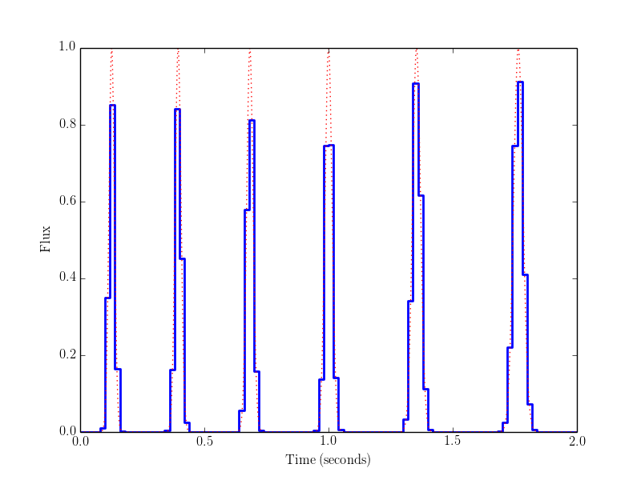

Example 2: simulating a pulsar¶
The solid blue curve below shows the “phase model” of a pulsar. By definition, this is a function Phi(t) which takes integer values when the observed pulse flux is maximized. Therefore, pulses occur when the red dotted lines (which correspond to integer y-values) intersect the blue curve.
{kind=link}
In the next plot, the solid blue curve is a simulated timestream for the pulsar whose phase model was shown in the previous plot. The pulses appear slightly different from each other, and have an irregular “stair-step” appearance. This is because the time sample size used in the simulation (20 ms) is comparable to the width of the pulses (~30 ms).
The red dotted curve shows the same simulation, sampled at high resolution. By default, simpulse obtains the low-resolution time samples (blue curve) by averaging the high-resolution profile (red dotted curve) over each time sample. This precsription is more accurate than say, evaluating the instantaneous flux at the midpoint of each sample.
{kind=link}
Here is the script to create these plots (simpulse/examples/python/02-simulating-pulsar.py):
#!/usr/bin/env python
#
# This script plots the phase model of a pulsar, and a simulation of the pulses.
#
# Note that in this example, the pulses will appear slightly different from each other, and
# have an irregular "stair-step" appearance. This is because the time sample size used in
# the simulation (20 ms) is comparable to the width of the pulses (~30 ms). By default,
# simpulse averages the pulse flux over each time sample (rather than say, evaluating the
# instantaneous flux at the midpoint).
import simpulse
import numpy as np
import matplotlib.pyplot as plt
t0 = 0.0 # starting time of simulation (seconds)
t1 = 2.0 # ending time of simulation (seconds)
nt = 100
##### To simulate a pulsar, you need two things: a phase model and a profile.
# Construct the phase model.
phase_model = simpulse.constant_acceleration_phase_model(
phi0 = 0.5, # value of the phase at reference time 't0'
f0 = 4.0, # value of the frequency f=dphi/dt at reference time 't0'
fdot = -1.0, # frequency derivative df/dt (note that this is independent of time)
t0 = 0.0 # a reference time (can be zero, but a nonzero value may be convenient)
)
# Construct the profile.
profile = simpulse.von_mises_profile(
duty_cycle = 0.1, # defined as D = (pulse full width at half maximum) / (pulse period)
detrend=False # if detrend=True, then the mean will be subtracted from the profile
)
##### Plot the phase model.
# phase_model.eval_phi_sequence(t0,t1,nt) returns a 1D array containing values
# of the phase phi evaluated at 'nt' evenly spaced points between 't0' and 't1'.
plt.plot(np.linspace(t0,t1,1000), phase_model.eval_phi_sequence(t0,t1,1000), 'b-', lw=2)
# Add some horizontal lines at integer y-values, to read off locations of pulses.
for i in xrange(1,7):
plt.axhline(y=i, color='r', linestyle=':')
plt.xlabel('Time (seconds)')
plt.ylabel('Pulse phase')
# plt.savefig('example2_phase_model.png') # write to file
plt.show() # display to screen
plt.clf()
##### Now simulate and plot the pulses.
# profile.eval_integrated_samples(t0,t1,nt) returns a 1D array of flux values
# of length 'nt',obtained by averaging the flux over 'nt' equally spaced time
# samples between t0 and t1.
data = profile.eval_integrated_samples(t0, t1, nt, phase_model)
# simpulse.utils.make_stairsteps() is a utility function for plotting a discrete time
# series as "stairsteps", in order to visually represent the discrete sampling.
(tvec, yvec) = simpulse.utils.make_stairsteps(data, t0, t1)
plt.plot(tvec, yvec, 'b-', lw=2)
# Now we add a curve showing the simulated pulsar at high time resolution, in order to
# visually compare with the low-resolution simulation just plotted.
#
# The easiest way to do this would be to call profile.eval_integrated_samples() as above,
# but with a larger value of nt. However, as an excuse to demonstrate more functions in
# simpulse, we do it differently, by calling the functions:
#
# phase_model.eval_phi(t) -> evaluate instantaneous phase at time t
# profile.point_eval(phi) -> evaluate instantaneous pulsar flux at phase phi
nt_fine = 2048
t_fine = np.linspace(t0, t1, nt_fine)
phi_fine = [ phase_model.eval_phi(t) for t in t_fine ]
rho_fine = [ profile.point_eval(phi) for phi in phi_fine ]
plt.plot(t_fine, rho_fine, 'r:')
plt.xlabel('Time (seconds)')
plt.ylabel('Flux')
# plt.savefig('example2_pulses.png') # write to file
plt.show() # display to screen